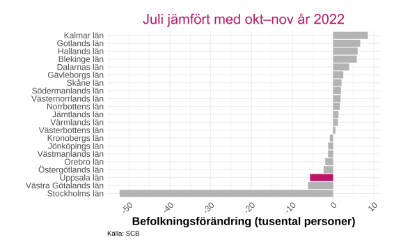
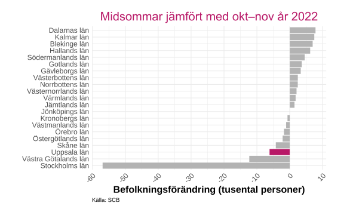
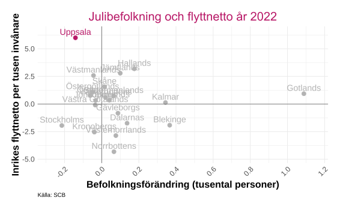
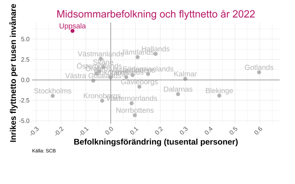
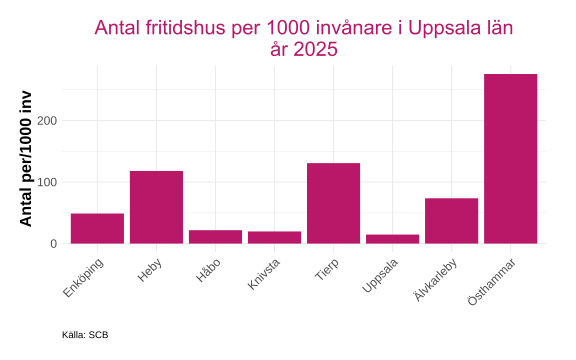

Förutsättningar
Inledning
Denna del av rapporten kartlägger Uppsala läns strukturella förutsättningar för besöksnäring. Här beskrivs hur befolkningen omfördelas geografiskt under sommarsäsongen, hur fritidshusbeståndet ser ut i länets kommuner samt vilket turistutbud som finns registrerat via Visit Sweden.
Alla interaktiva grafer kan laddas ned genom att trycka på  . Då sparas just den bild som visas, med exempelvis den valda regionen. Genom att dubbelklicka på kommunnamn i grafens legend så zoomas den kommunen in för en mer detaljerad vy(flera kan väljas samtidigt).
. Då sparas just den bild som visas, med exempelvis den valda regionen. Genom att dubbelklicka på kommunnamn i grafens legend så zoomas den kommunen in för en mer detaljerad vy(flera kan väljas samtidigt).
Länets förutsättningar
Befolkningsförändring under sommaren
Sommarsäsongen innebär betydande befolkningsförskjutningar i Sverige. När invånare lämnar sin ordinarie bostadsort för fritidshus, camping eller andra resmål förändras den faktiska befolkningsfördelningen tillfälligt. Dessa rörelser syns inte i den folkbokförda befolkningsstatistiken, men fångas upp genom mobilitetsmätningar.
I detta avsnitt visas hur befolkningen geografiskt omfördelas under juli månad och kring midsommar, jämfört med referensperioden oktober–november då befolkningsfördelningen bedöms vara som mest “normal”. Formeln för förändringen är:
\[ \text{Förändring (\%)} = \frac{\text{Period} - \text{okt-nov}}{\text{okt-nov}} \times 100 \quad \text{där Period kan vara juli eller midsommar} \]
Data är hämtat från Statistiska centralbyrå (SCB) (2023).
Källa: SCB
Det går att skifta mellan lager i kartan, genom att klicka på “hamburgemenyn” på figurens vänstra sida så kan jämförelser för juli bytas mot midsommar.
Befolkningen i storstadsregionerna minskar under sommarmånaderna och midsommar, samtidigt som många landsbygdskommuner ökar i invånarantal. 5 av länets 8 kommuner har minskande befolkning under perioderna jämfört med oktober-november och Östhammar är den kommunen i länet som har den största befolkningsökningen på 31.6 % under sommaren 2022 och 64.6 % under midsommaren samma år.
Befolkningsförändringar på regional nivå
Figurerna nedan visar den procentuella befolkningsförändringen under juli respektive midsommar för samtliga svenska län, jämfört med referensperioden oktober–november 2022. En positiv förändring innebär att fler personer befann sig i länet än under referensperioden, ett tecken på inflöde av besökare eller sommarbofasta. En negativ förändring indikerar att invånare tillfälligt lämnat länet.
Uppsala läns position i relation till övriga landet framgår tydligt i figurerna.

Ladda ner
{kind=link}
{kind=link}

Ladda ner
{kind=link}
{kind=link}
Uppsala län är ett av de län i Sverige med störst befolkningsminskning under sommarmånaderna, där Stockholms län har den betydligt största minskningen. Mönstret under midsommar liknar det för juli.
En trolig förklaring till Uppsala läns relativt stora befolkningsminskning är länets höga andel studenter. Uppsala är en av Sveriges största universitetsstäder, och under sommarmånaderna, när terminen är slut, återvänder många studenter till sina hemkommuner.
Befolkning och flyttnetto
För att sätta sommarens befolkningsrörelser i ett bredare demografiskt perspektiv jämförs de nedan med länens inrikes flyttnetto, det vill säga skillnaden mellan antalet in- och utflyttare under ett kalenderår. Sambandet är inte nödvändigtvis starkt eller enkelt, men jämförelsen ger en indikation på om de länder som tillfälligt “fylls på” under sommaren också är de som strukturellt attraherar inflyttning under året i övrigt.
Varje punkt i spridningsdiagrammet representerar ett län. Uppsala är markerat separat.

Ladda ner
{kind=link}
{kind=link}

Ladda ner
{kind=link}
{kind=link}
Uppsala läns position i diagrammet är anmärkningsvärd. Länet har det högsta inrikes flyttnettot per tusen invånare i landet, fler väljer alltså att permanent flytta till Uppsala än till något annat län i förhållande till befolkningsstorleken. Samtidigt uppvisar länet en negativ befolkningsförändring under både juli och midsommar.
Detta till synes motsägelsefulla mönster är sannolikt en direkt följd av länets studenttäta befolkningssammansättning: Uppsala attraherar kontinuerligt nya permanenta inflyttare, men förlorar tillfälligt en stor del av sin faktiska närvaro under sommaren när studenter lämnar staden.
Fritidshus
Fritidshus är en central del av besöksnäringen i många kommuner, även om de sällan syns i den kommersiella gästnättsstatistiken. Fritidsboende i egna eller lånade hus genererar besök, lokal konsumtion och säsongsbefolkning utan att lämna spår i hotell- eller campingregistren. Antalet fritidshus per invånare ger därför en indikation på hur stor den icke-kommersiella besökskapaciteten är i en kommun
Antalet fritidshus beräknas utifrån Fastighetstaxeringsregistret (FTR) och avser fastigheter utan folkbokförd befolkning inom utvalda typkoder, ägda av fysiska personer eller dödsbon, den 1 januari respektive år. Måttet redovisas per 1000 invånare den 31 december samma år.
Data är hämtat från Rådet för främjande av kommunala analyser (2025) som hänvisar vidare till Statistiska centralbyrån (SCB) (2025).

Ladda ner
{kind=link}
{kind=link}
Östhammar har klart flest fritidshus per 1 000 invånare i länet med över 250, följt av Tierp och Heby. Mönstret speglar den geografiska karaktären hos dessa kommuner; kust, skärgård och landsbygd attraherar fritidsboende i betydligt högre utsträckning än tätortsnära kommuner.
I den andra änden återfinns Uppsala, Knivsta och Håbo med länets lägsta värden. Uppsala är en tätbefolkad stadskommun där markanvändningen domineras av permanentboende, och Knivsta och Håbo uppvisar ett liknande mönster, som pendlingskommuner nära Stockholmsregionen präglas dessa av permanentbostäder snarare än fritidsbebyggelse.
Visit sweden
Kartan nedan visar registrerade turistmål i Uppsala län hämtade från Visit Swedens öppna API (Visit Sweden (2026)). Varje punkt representerar ett besöksmål och kan tillhöra en av följande kategorier: butik, restaurang, boende, evenemang, plats eller utflyktsmål.
Klicka på en punkt för att se mer information, inklusive namn, kategori, beskrivning och länk till mer information. Kartan ger en övergripande bild av länets turistiska infrastruktur och geografiska spridning av utbudet.
Uppsala län en av få som saknar kontaktperson https://corporate.visitsweden.com/nationellt-api/#lista-pa-kontaktpersoner-i-din-region
Källa: Visit Sweden
För tillfället så pågår ett pilotprojekt med .. och visitsweden vilket gör att de aktörer i länet som ej ingår i .. saknas i datamängden och därav inte visas i kartan.
Källor
Rådet för främjande av kommunala analyser. 2025. ”Kolada – Jämför och analysera nyckeltal i kommuner och regioner”. https://www.kolada.se/.
Statistiska centralbyrå (SCB). 2023. ”Snart vantas sommarens stora folkförflyttning”. Statistiska centralbyrå; https://www.scb.se/hitta-statistik/artiklar/2023/snart-vantas-sommarens-stora-folkforflyttning/.
Statistiska centralbyrån (SCB). 2025. ”Statistikdatabasen”. https://www.statistikdatabasen.scb.se/pxweb/sv/ssd/.
Visit Sweden. 2026. ”Nationellt API – Visit Sweden”. https://corporate.visitsweden.com/nationellt-api/.